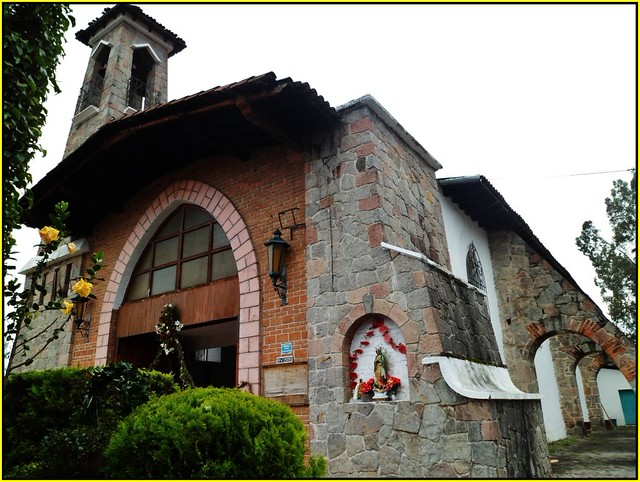
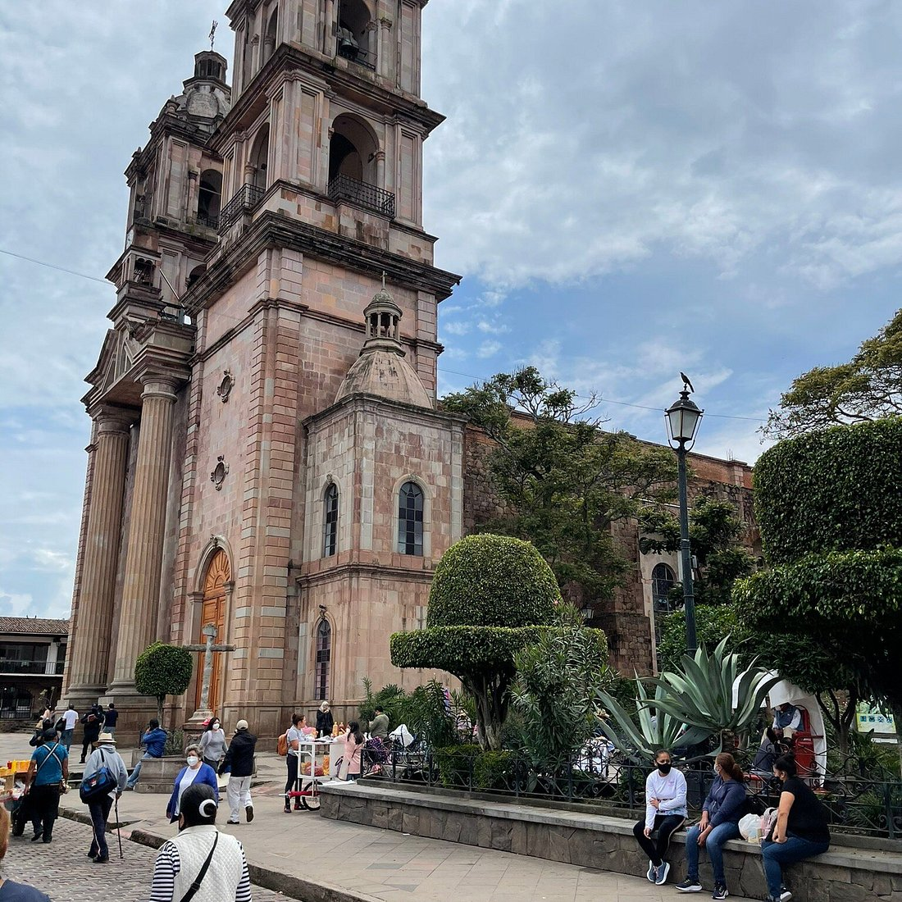
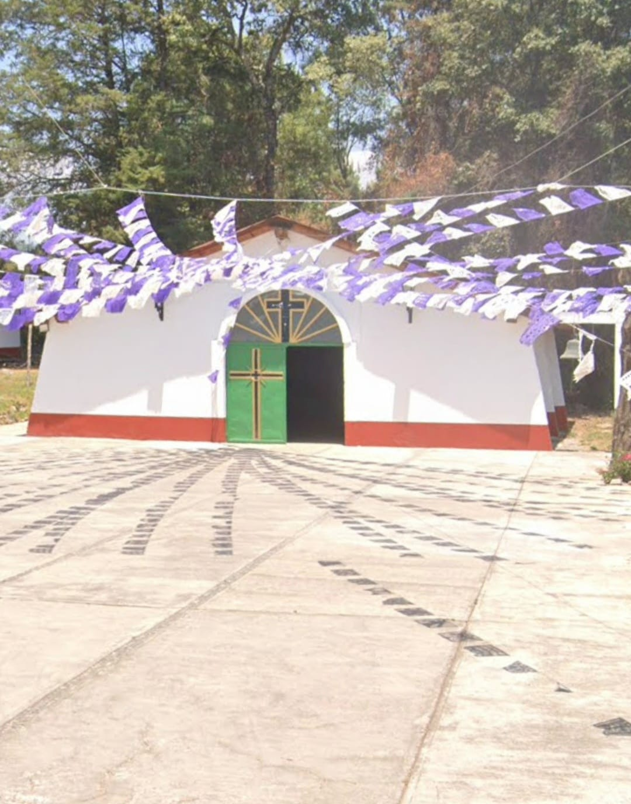

Santa Maria Ahuacatlán
Este templo se localiza en el histórico barrio de Santa María Ahuacatlán y es uno de los centros de peregrinación más importantes de Valle de Bravo. Su fama se debe al venerado Cristo Negro de Santa María Ahuacatlán.
Alberga la imagen del Cristo Negro, considerada milagrosa por miles de fieles. La tradición local cuenta que la imagen sobrevivió a un incendio y quedó ennegrecida, convirtiéndose en símbolo de paz y devoción. Cada año recibe peregrinos de distintas regiones de México.

Capilla
La Capilla de Guadalupe está situada en la calle Independencia, en el centro histórico de Valle de Bravo. Es considerada una de las capillas más antiguas y tradicionales del municipio.
.

San Francisco de Asis
La Parroquia de San Francisco de Asís es el principal templo católico de Valle de Bravo y uno de los edificios más emblemáticos del Pueblo Mágico. Se encuentra frente a la plaza central. Según diversas fuentes históricas, el templo actual fue construido principalmente a finales del siglo XIX, aunque conserva elementos más antiguos relacionados con la presencia franciscana en la región.
Su fachada combina elementos neoclásicos con influencias de la arquitectura religiosa colonial. Una de sus torres tiene origen en el siglo XVI, vinculada a los primeros procesos de evangelización de la zona. En su interior alberga arte sacro, esculturas históricas y un importante retablo dedicado a San Francisco de Asís. Es considerada el centro religioso más importante del municipio.
.

Iglesia San Jose Tehuastepec
La Iglesia de San José de Tehuastepec es un templo de carácter comunitario ubicado en la localidad de Tehuastepec, en la región cercana a Valle de Bravo y Temascaltepec.
.
